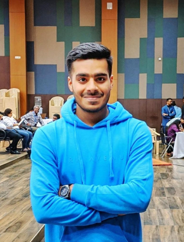

Leaving an impact on people’s lives
by building futuristic products to solve complex problems. Adding my two cents to the world.
Resume

Now
Past Experiences
Imperial College Business School
MSc Economics & Strategy
MasterCard
Project offered by Imperial Consulting Group
Start Up Investment
Investing in budding start ups, to accelerate their growth.
President
Consulting Club, Imperial College Business School
What I do Best
Personal Interests
Product Innovation
The development of new products and the change in design of established products
Growth Strategy
Growth strategy is a plan of action that allows you to achieve a higher level of share
Data Analysis and Visualisation
Inspecting, cleansing, transforming and modeling data with the goal of discovering information
Demand Generation
Data-driven marketing strategy that creates awareness of and interest
Cross-functional team leadership
Leading a group consisting of people from different functional areas of the company
Financial Modeling
Process of creating a summary of a company's expenses and earnings
Numbers Don't Lie
20+
Events Organized
10+
Projects
30+
Start Ups Consulted
What others have to say
Navin has always been a key member of the business development team & his good knowledge about business strategy has helped out startup to grow. I have been working with him for 2 years now and he has improved each day. I wish him success for the coming future.
Anubhav MishraFounder/CEO at LegalMind
I met Navin through Future City Summit event in Bali. Navin is a young man with an agile mind. He along with his team proposed a project called Bali Tech Innovation Center as a part of solutions in the hackathon we had at the event. Navin is an ambitious person with a lot of ideas worth exploring.
Wahyu TaufiqFounding Partner, Dapura
Navin is a brilliant individual who has skillset that varies along different lines and can accommodate any kind of difficulty, he knows how to get things done in a smooth manner. The attitude of his towards work is going to take him to heights.